基于web的个人任务管理系统的设计与开发
指导老师：季斌
陈俊生
目录
- 研究背景和意义
- 需求分析
- 系统架构
- 系统实现
- 结论
研究背景和意义
传统的任务管理模式（如纸质清单、PC端软件）对于个人而言，往往存在着同步困难，难以携带等缺点，会让我们任务管理的效率低下。一个基于web的个人任务管理系统可以为用户提供更加高效的任务管理。随着互联网技术的发展，现在移动互联网也逐渐成为主流，基本上人人都拥有一部智能设备，一般的智能电子设备都有浏览器，通过浏览器就能访问个人任务管理系统，这样会大大提高任务管理的效率，从而进一步提升个人在社会中的竞争力。
需求分析
- 系统概述
- 业务流程分析
- 功能需求分析
系统概述
个人任务管理系统是一个基于web的系统和应用。
它直接运行在各种平台的浏览器上，通过Internet进行访问。
个人任务管理系统具备了实时性、便捷性、低成本等特点。
业务流程分析
- 用户管理：用户登录、注册、注销
- 任务管理：任务添加、修改、删除、查询
- 统计：未完成和已完成，行程预览
功能需求分析
系统主要模块

系统架构
- MVC模式
- 系统架构设计
- 数据库设计
MVC模式

MVC是一个框架模式，它强制性的使应用程序的输入、处理和输出分开。
使用MVC应用程序被分层三个核心部件：模型、视图、控制器。
MVC模式的优势：前后端分离
- 是一种开发模式
- 分清前后端职责，独立部署
- 提高开发效率
- 全部使用AJAX进行数据交互
- 通过SPA使得前端控制路由，处理大部分业务逻辑
系统架构设计

视图层
使用vue.js开发组件化的前端页面
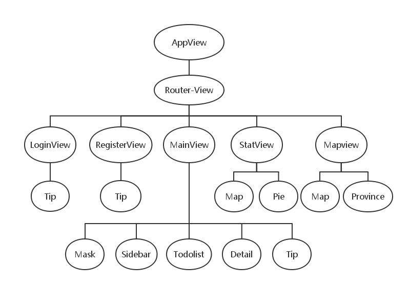
控制层
使用springMVC
主要用来处理请求

业务逻辑层
使用spring
处理一些必要的业务逻辑

模型层
使用hibernate
数据查询与修改，将数据库的数据与domain进行映射

数据库设计
主要由用户表、任务表以及地图信息表组成

个人任务管理系统架构的特点
- 实现了前后端分离开发模式
- 实现了前端页面组件式开发
- 数据与视图双向绑定
- 服务器端MVC
- 可扩展性强
系统实现
登录界面
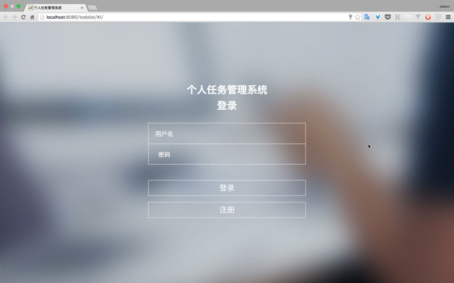
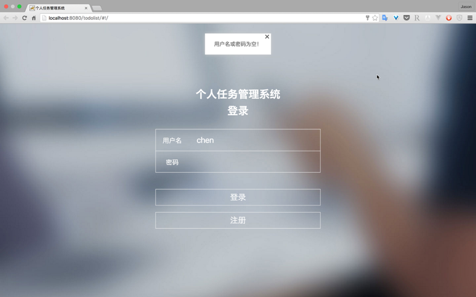
注册界面
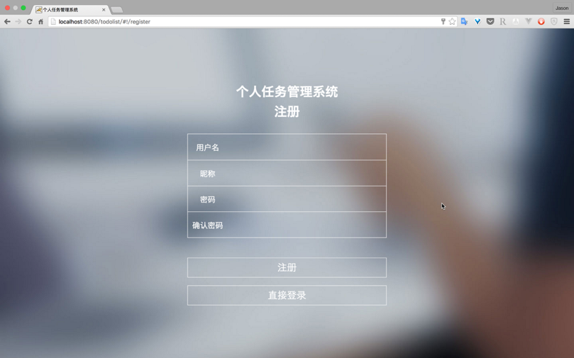
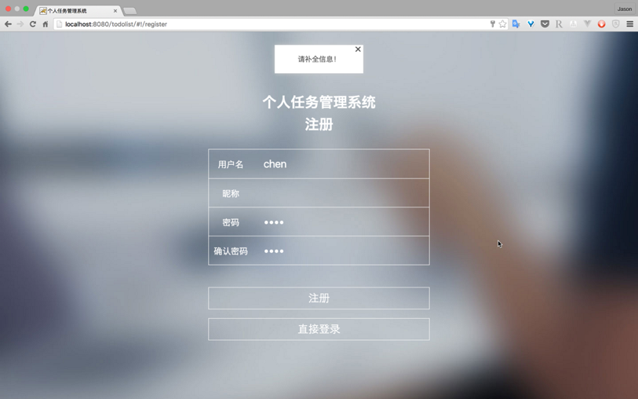
系统主界面
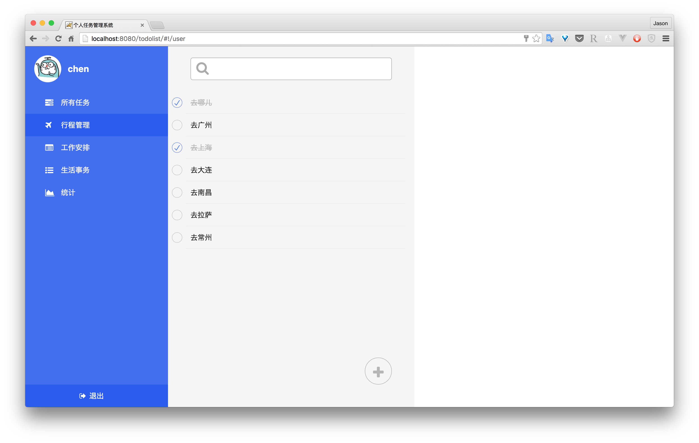
添加任务
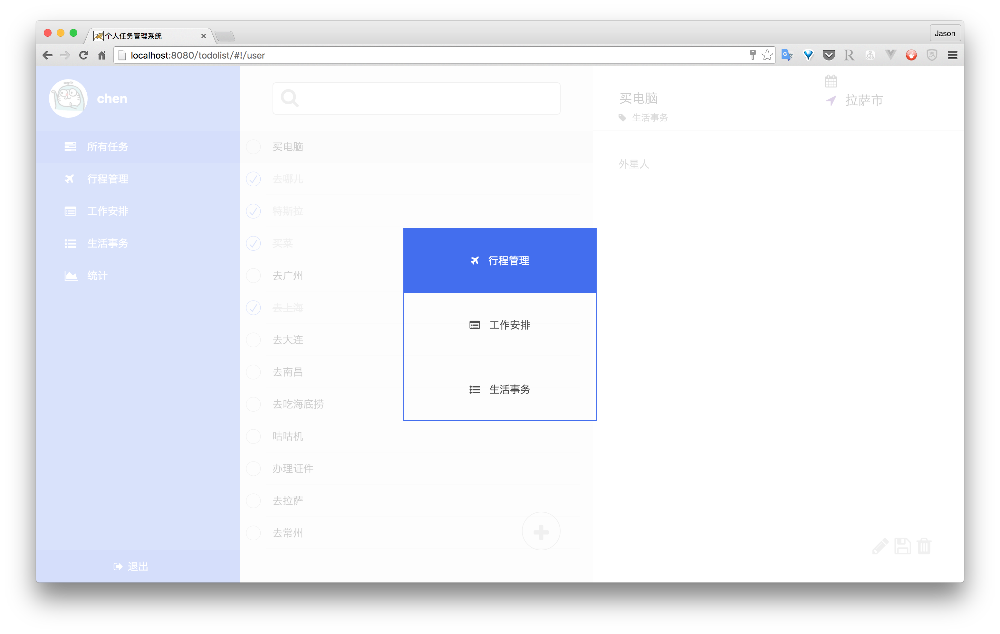
设置目的地
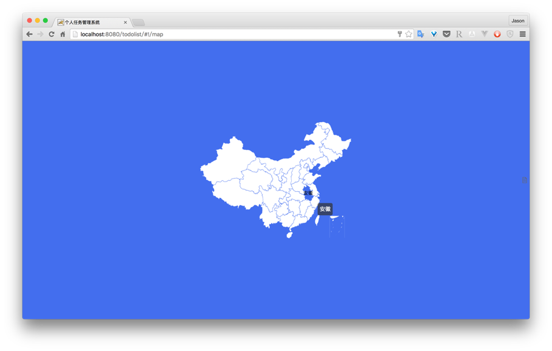
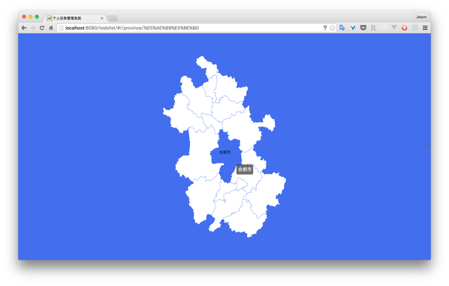
完成情况统计
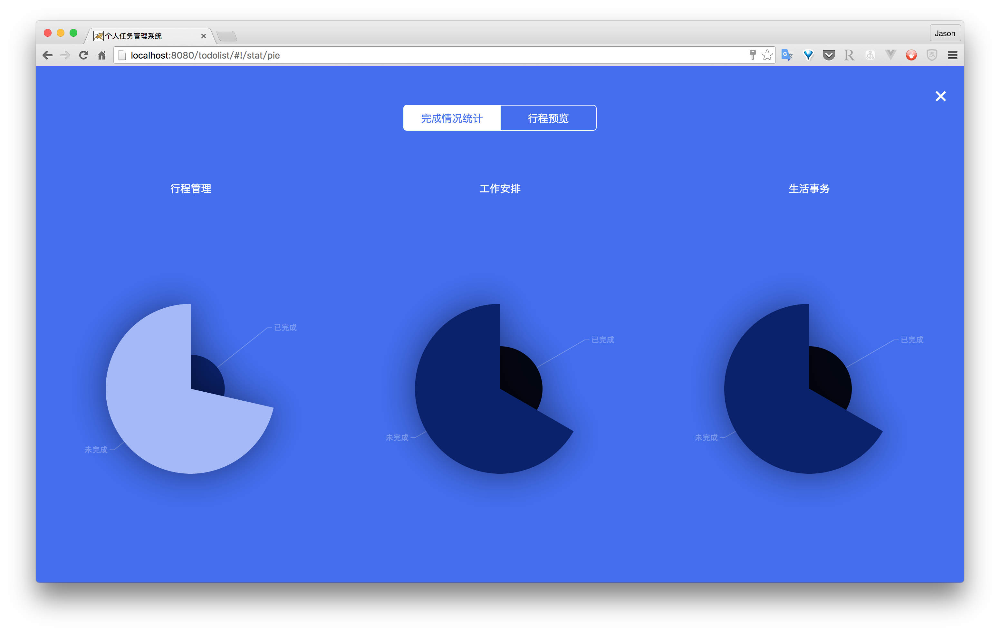
行程预览
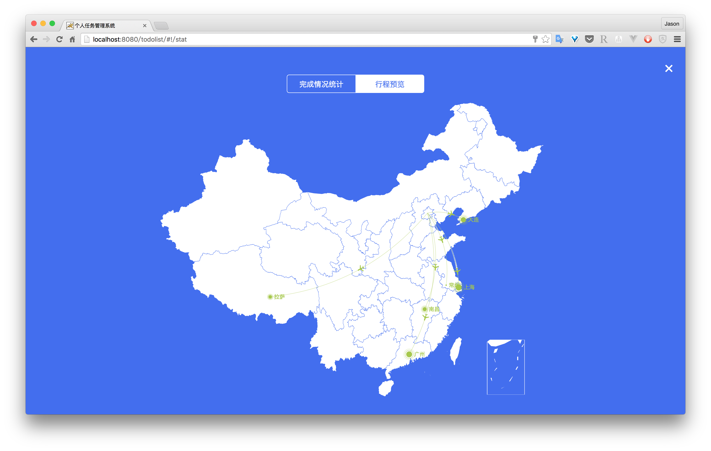
结论
个人任务管理系统是用企业级架构模式SpringMVC、Spring、Hibernate等框架来搭建的。其中严格按照控制层、业务逻辑层和模型层的分层模式和规范来写服务器端模块代码。这样的分层使得系统架构结构清晰，代码模块明显，大大提高了开发效率。
个人任务管理系统采用了前端MVVM框架Vue.js来写前端组件，通过组件化大大提高了代码的可复用性，同时代码模块化，提高了代码的可读性和可维护行。
感谢
感谢季斌老师对毕设的指导
感谢全体地理信息系统老师四年来的教导
感谢所有帮助过我的同学们